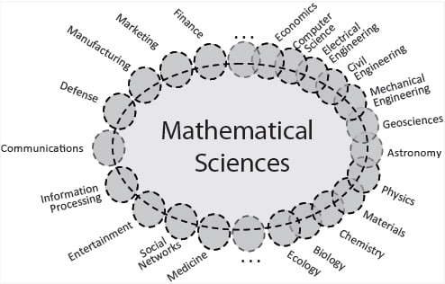

Conclusion

Overall, learning math in school is indispensable because it is the foundation upon which a multitude of other skills and knowledge areas are built. It empowers individuals to make informed decisions, pursue rewarding careers, and navigate the complexities of our modern world. Math is not just an academic subject; it is a life skill that enriches and empowers us in countless ways.